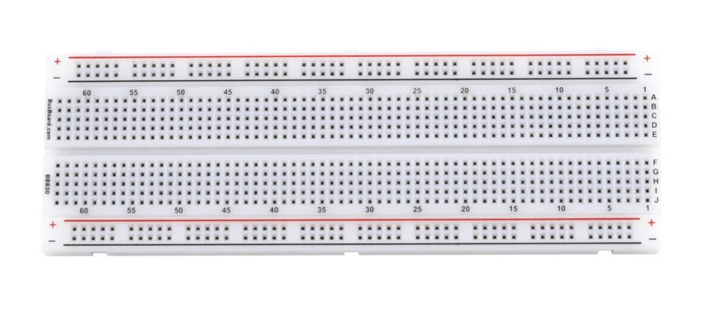
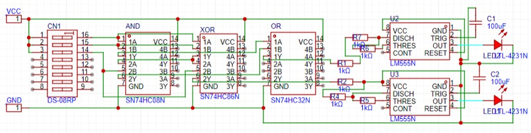
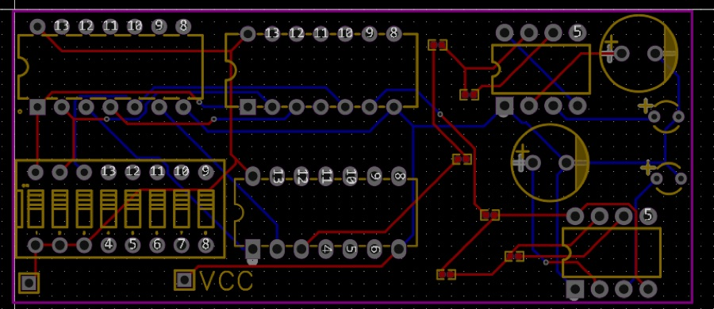
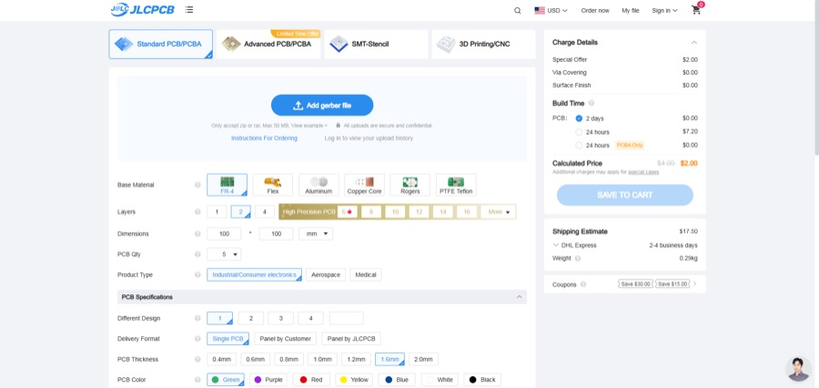

At a glance
- Designed in
- EasyEDA
- Board
- Two layers
- Made by
- JLCPCB, parts assembled
- Paid for by
- Hack Club's $100 OnBoard grant
The story
For a school project I built a half adder that flashes its result on LEDs. It worked on a breadboard, but a breadboard is fragile and messy. I wanted something permanent, so I designed a real circuit board for it.

The breadboard
The circuit already worked on a breadboard. I could have soldered it onto perfboard, but with this many parts it would have been slow and messy. A custom board would be cleaner, and I wanted to learn how to make one.

The schematic
My teacher (Mr. Andrade) suggested EasyEDA. After a short tutorial I found every part I needed in its library and placed them in the schematic. EasyEDA shows each chip's pin diagram, so wiring came down to drawing lines between pins. Then I checked every connection against the datasheets and the breadboard.

The layout
Next I placed the parts on the board, as tight as I could while keeping it logical, and let the auto-router draw the copper traces. On a two-layer board traces can only cross by switching sides, so a badly placed part makes routing fail. I moved a few parts and redrew some traces by hand.

The order
I ordered from JLCPCB, which can also solder the parts on, so I didn't have to place every chip myself. Hack Club's OnBoard grant gives students $100 toward their first board, and it covered the order. I uploaded the files from EasyEDA, checked out and waited for the mail.

The finished board
When the boards arrived, all that was left was soldering the power connection. They worked, and they looked a lot better than the breadboard.